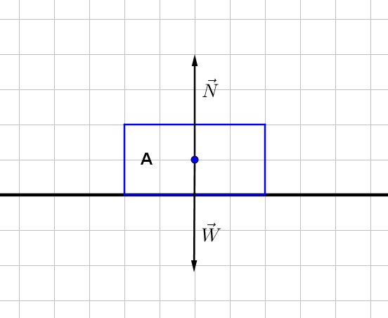
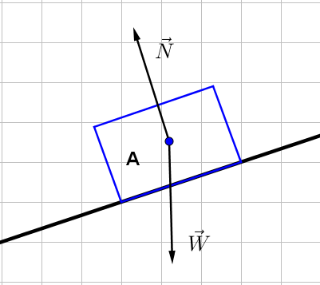
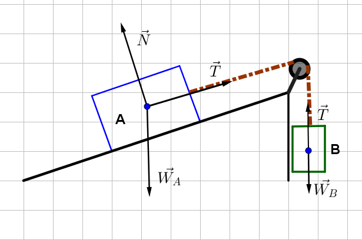

Leyes de Newton
Primera Ley de Newton
Todo cuerpo posee masa, por lo tanto, posee inercia
"Todo cuerpo permanecerá en su estado de reposo o de movimiento rectilíneo uniforme, mientras no exista
una fuerza externa capaz de modificar dicho estado"
La inercia es la oposición de los objetos a cambiar su estado de reposo o movimiento
Sistema de referencia inercial
Segunda ley de Newton
Toda fuerza aplicada a un cuerpo producirá una movimiento en la misma dirección en que actúa
$$F = ma$$
"Si aplicamos una fuerza F a una masa m se genera en ésta una aceleración a, de tal modo que la
aceleración a es directamente proporcional a la fuerza F, e inversamente proporcional a la masa m"
Solo es válida para cuerpos cuya masa es constante
Peso
Representa la fuerza con que la tierra atrae la masa de dicho cuerpo
$$W = mg$$
Un baúl de 60 kg sobre una superficie sin fricción es jalado horizontalmente por medio de una cuerda con
una fuerza de 240 N. ¿Cuál es la aceleración del baúl?
Una bolsa de arroz tiene marcada en su envoltura que contiene una masa de 5kg, ¿Cuál es su peso?
Diagrama de cuerpo libre
Un dibujo del cuerpo en estudio sin detalles y que muestra solo las fuerzas externas que actúan en el



Tercera ley de Newton
Acción-Reacción

Para toda fuerza de acción existe otra de reacción de igual magnitud en la misma dirección pero en sentido contrario
"Si el objeto A ejerce una fuerza F sobre el objeto B, entonces el objeto B ejerce una fuerza – F sobre el objeto A, la cual tiene igual magnitud pero dirección contraria a F"
$$\overrightarrow{F_{\text{ab}}} = - \overrightarrow{F_{\text{ba}}}$$
¿Cuál es la fuerza de reacción de un cuerpo de 1kg en caída libre?